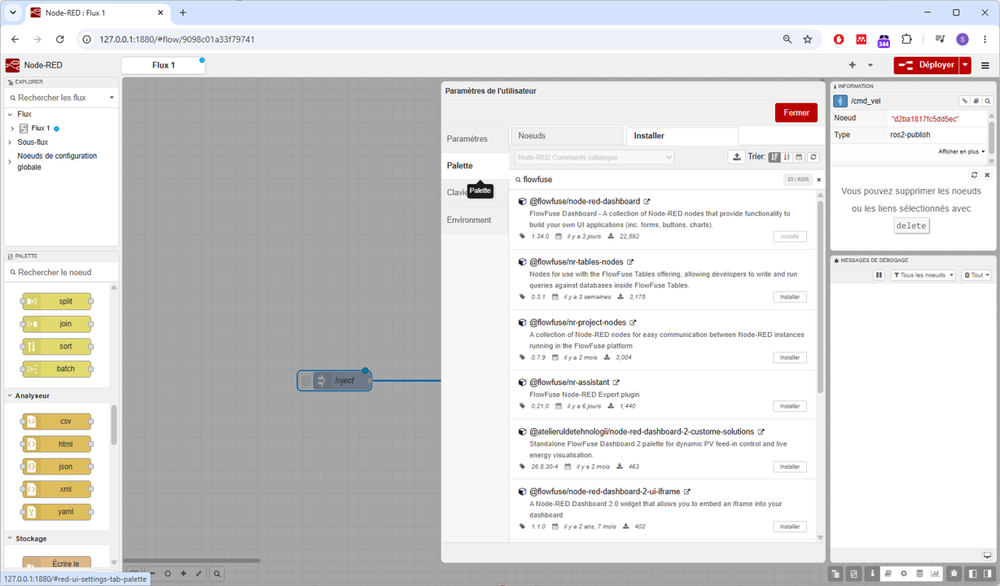
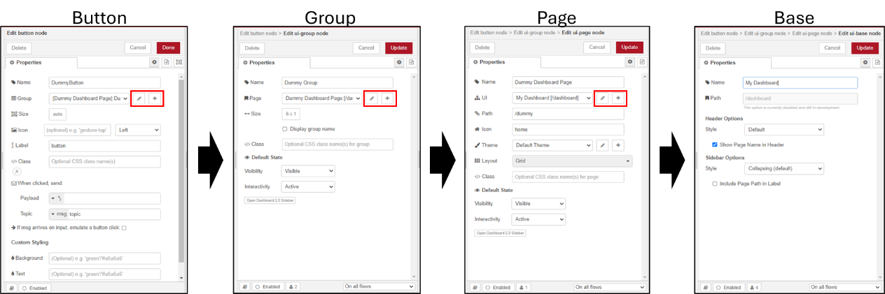
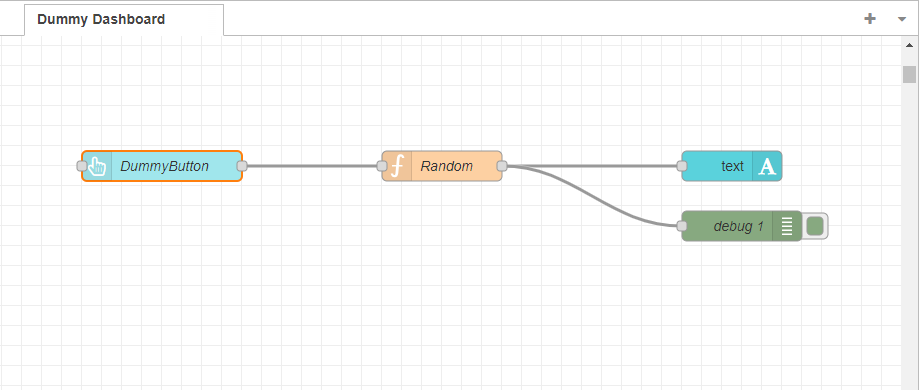
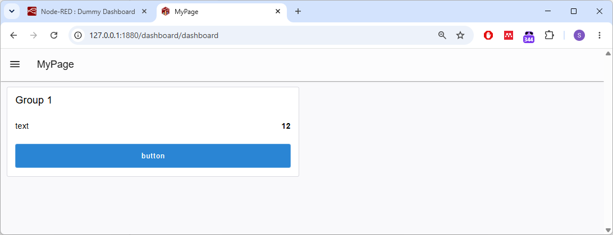
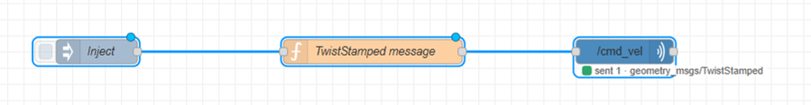
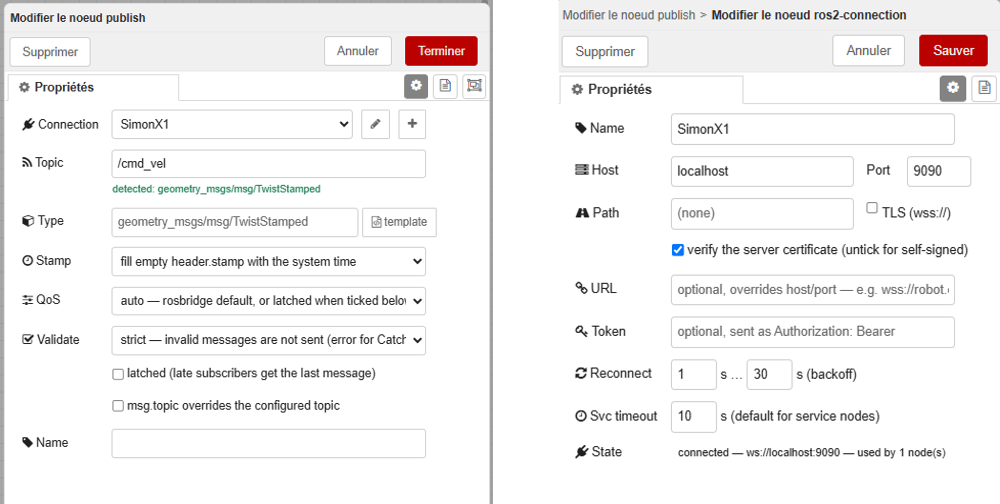
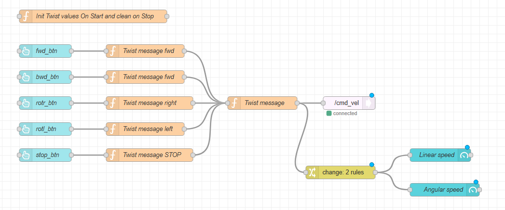
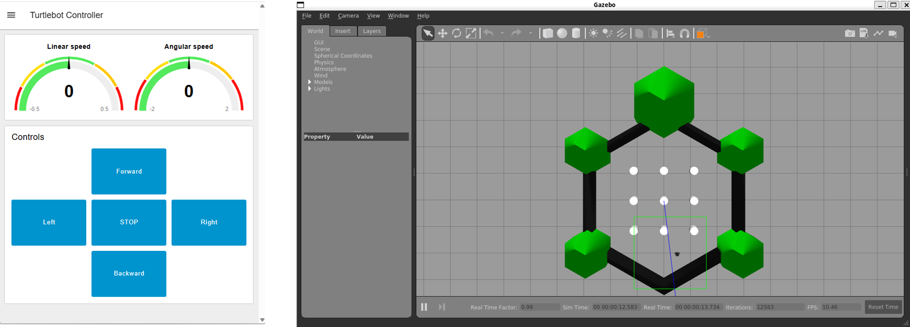
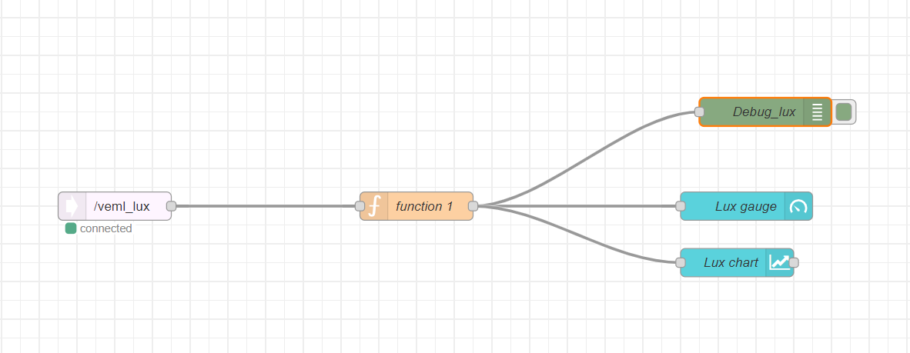
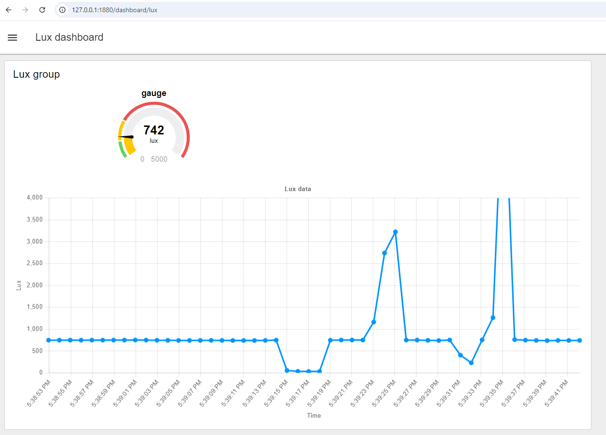

Introduction to Node-RED
Human-IST, ProtoFab, LearningLab, UniFR
ProtoFab assignment 7: Introduction to Node-RED
Introduction
This practical work focuses on learning the basics concepts of Node-RED
In this practical work, you will perform the following tasks:
Task 1 – Install Node-RED
Task 2 – A first Node-RED dashboard
Task 3 – A Node-RED dashboard to control your Turtlebot3 (simulation & real robot)
Task 4 – [OPTIONAL] A Node-RED dashboard to monitor your Arduino luxmeter (Arduino-ROS2-NodeRED integration)
Learning objectives:
At the end of the assignment, you should be able to
Know the basics of Node-RED IDE
Know how to program and deploy a Node-RED dashboard
Know how to communicate with local ROS nodes
Pre-requisites
IDE for Arduino installed on your machine
Node-RED installed on your machine (Linux). See Task 1 for instructions.
- Windows - We recommend installing it on your Linux WSL machine (where ROS2 is also installed)
[For the optional task] Notions seen in the assignment AN03
- The Arduino ESP32 circuit with the luxmeter (see AN_03)
Notions seen in the lecture LN06
Hints
When starting Node-RED, all flows are also started. This might create some problems when your flows are connecting to unavailable nodes; typically, when connecting to rosbridge or external servers. You can use the command below to start Node-RED without deploying flows.
$ node-red --safe
Tasks
Task 1 – Install Node-RED
Follow these instructions to install node-js on your system
For Windows (WSL Linux) Follow these instructions to install nvm, node.js, and npm on WSL2 Linux
Remark: You may install only the LTS version of node-js, to save some space on your system. See link for more details.- Install NVM to manage node.js versions. In a terminal, type the command below to install nvm (Node Version Manager).
$ curl -o- https://raw.githubusercontent.com/nvm-sh/nvm/master/install.sh | bashRestart your terminal
Check that nvm is installed by typing the command below. The command below list available versions installed on your machine.
$ nvm ls- Finally install the latest LTS version of node-js by typing the command below. You can then check that it was correctly installed by typing “node -v” and “npm -v” to check the versions of node and npm installed on your machine (v24.22.1 and v11.19.1 on my system). npm is actually a package manager for node-js, it is used to install node packages (like Node-RED).
$ nvm install --ltsFor Native Linux (Ubuntu) Follow these instructions to install nvm, node.js, and npm on Ubuntu
Remark: You may install the LTS version of node-js to save some space on your system. See link for more details.
Then continue by installing Node-RED on your Ubuntu system. In a terminal, type the command below
Remark: You may potentially need to use ‘sudo’ before the command to install it as admin (was not needed in my case)$ npm install -g --unsafe-perm node-redYou may want to add Node-RED to your path permanently (to ensure you can run it from anywhere, even after a restart)
In a terminal, type the command below to get the {node-red_installation_path}
$ npm get prefixEdit your “.bashrc” file and add the line below at the end of your file. Note that you need to use your own {node-red_installation_path}
Remark: Pay attention, there is an extra “/bin” after the path!export PATH="{node-red_installation_path}/bin:$PATH"
Start Node-RED by typing “node-red” in your terminal
$ node-redOpen the Node-Red user interface on your browser using the following url: http://127.0.0.1:1880/
Note: to open the Dashboard(s) you created, you can use the url http://127.0.0.1:1880/dashboardInstall the Node-RED ROS2 palette (node-red-contrib-ros2-suite) using the palette manager within the node-red UI or directly using the command line below
$ npm install node-red-contrib-ros2-suiteFinally, install the ROS bridge server on your machine running ROS2 (in your case, it is probably the same machine). This bridge allows to connect Node-RED and ROS2 together through a websocket connection. We will need this for the Task 3 of this assignment
To install rosbridge, in a terminal type
$ sudo apt update $ sudo apt install ros-jazzy-rosbridge-suiteYou should now be able to start rosbridge using this command in a terminal
$ ros2 launch rosbridge_server rosbridge_websocket_launch.xml
Task 2 - A first Node-RED dashboard
As a first task, we will ensure everything is working as expected by starting Node-RED and creating a dummy dashboard. This dashboard will just consist in a button, an output text field and a small function to generate a random number. When clicking on the button, a new random number is generated and displayed on the text field.
Let’s do the task step by step:
Ensure Node-RED was successfully installed. Start Node-RED and open its UI in your browser. To open Node-RED interface, just open your browser at this url: http://127.0.0.1:1880/
Remark: We recommend using specific flow files for each project (below we specify a flow file name).$ node-red dashboard_flows.jsonAdd the Dashboard 2.0 palette. This palette provides the elements to create a dashboard (buttons, text, gauges, charts, etc.)
From the web interface, click on the menu button (the 3 horizontal lines on the top-right corner)
Select “manage palette”.
Select the “install” tab and search for flowfuse (see image below), install @flowfuse/node-red-dashboard palette

Now create a new flow tab and rename it (i.e. “Dummy Dashboard”)
Hint: to rename it, you can double-click on its name on the top of the user interface and then change its name in the property window.Add a “button” node to your new flow
Drag and drop a “button” node from the “dashboard 2” palette (left pane of the user interface)
Configure the button and the UI (double-click on the newly created button node)
You need add and configure the different parts of your UI (see figure below)
To enter the configuration of a sub-layout, click on the edit button of the current layout (see red rectangles on the figure below)
Remark: The button is embedded in a group-ui, which is embedded in a page-ui, which is embedded in the base-ui (as illustrated in the figure below).For now, you can just set a name for the different parts of your UI and keep the default values for other parameters. I would still advise to have a quick look at the different layout options to get a sense of what can be done.

Add a “text” node to your flow to display the value
Drag and drop a “text” node to your flow from the “dashboard 2” palette
Configure the “text node (UI) (double-click on the text node)
Set a name to your “text” component and set its Label content.
Add it to the same Group as the previous “button” node
Add a “function” node to your flow
Drag and drop a “function” node to your flow from the function palette
Edit the node to generate a random integer number between 0-100 (double-click on the node)
You can see the javascript code below
msg.payload = Math.round(Math.random()*100); return msg;
Connect the output of the “button” node to the input of the “function” node and connect the output of the “function” node to the input of the “text” node
Remark: You can see the final expected flow on the picture below (Note: an extra “debug” node has been added).Deploy your flow (using the button on the top-right of the UI) and open the dashboard in your browser using the address: http://127.0.0.1:1880/dashboard/
- In your broswer, on the left of your dashboard webpage, you can see the different pages available. Open your newly created page and test your UI.


A few suggestions to go further:
Play with the different settings and layouts for the UI nodes
Also display the value using a gauge node
Display the last 20 values received on a chart
Task 3 - A dashboard to control your Turtlebot3 (simulation & real robot)
As a second task, we will connect to a ROS topic and send commands to control the simulation of the turtlebot3 robot. The controller user interface (developed with Node-RED) will send commands to the right ROS topic. We will first develop a basic flow to test the features and then you will develop the graphical interface to send commands to the turtlebot3. It should be able to move forward (up), backward (down), rotate right (right), rotate left (left) and halt (stop).
Let’s do the task step by step.
Let’s start with a basic flow:
Start node-red with a new flow-file, specific for ROS
Remark: If you have all your flows in the same file, you might have problems when starting node-red: nodes connecting to ros bridge (i.e. pub and sub nodes) will yield problems when not being able to reach/connect to ROS server. In such case, just start roscore and rosbridge to let node-red start correctly.$ node-red ros_flows.jsonCreate a new flow and rename it.
Now add an inject node, a function node and a ros2 publish node; connect them sequentially (see image below).

Overview of a basic flow that sends TwistStamped data to the robot For the “Send data” inject node, you can keep its default settings. Once the flow deployed, you will ahve to click on the little grey square on its left to trigger the function connected to its right.
For the “TwistStamped message” function node, modify its “On Message” function to look like the code below. It creates a TwistStamped message with a linear and angular values of 0. The msg.payload corresponds to a JSON format ROS2 TwistStamped data message.
var sent_lin_x = 0 var sent_ang_z = 0.4 msg.payload = { "header": { "stamp": { "sec": 0, "nanosec": 0 }, "frame_id": "" }, "twist": { "linear": { "x": sent_lin_x, "y": 0, "z": 0 }, "angular": { "x": 0, "y": 0, "z": sent_ang_z } } }; return msg;For the “/cmd_vel” ROS publish node, you need to configure it to connect to your ROS2 and send the data to the right topic. To do so, double-click on the node and
- Setup the connection (you can leave default settings, just give it a custom name). Note that the ROS server is the one running rosbridge (see below) and you must have rosbridge running to be able to connect to it. You can start rosbridge using the command given in below in step 4.
- Select the /cmd_vel topic to send the data to the robot. Note that you must have the topic available on your ROS2 system to be able to select it. Concretely, you need to have rosbridge running and the turtlebot3 simulation running to be able to select the topic, see step 4 below for both commands. Configure the topic “Stamp” parameter to “fill empty header.stamp with the system time”. On the Type parameter, click on the “template” button to see what is the format expected for the message (actually see that the format is the same as the one created in the function node).
- Click “Done” (“Terminer”) to save your node configuration.

Configuring the IP of your ROS server within Node-RED. - To deploy your flow. Click on the upper-right corner of the Node-RED UI for the “Deploy” button. Note that you will need to (re)deploy your flow every time you modify it.
We will now test the flow
On a terminal, start rosbridge. (it should already be running)
$ ros2 launch rosbridge_server rosbridge_websocket_launch.xmlOn another terminal, start the gazebo simulation for your robot:
$ ros2 launch turtlebot3_gazebo turtlebot3_world.launch.pyNow go back to your Node-RED flow UI, modify the linear (ie. 0.1) or angular (ie. 0.3) values of your TwistStamped function, redeploy and finally click on the small grey rectangle on the left of your inject node to issue the command. You should now see the robot move in the simulation window.
Close the simulation (Note: you may want to keep rosbridge running …)
Now let’s develop a basic user interface to control the simulated robot.
- In our proposed flow, we use “flow variables” (similar to the concept of global variable, accessible within your flow) to modify the linear and angular speed. The chosen approach will simplify the transition to the real robot for the end of the task. However, numerous other approaches could be developed. You can see the complete proposed flow on the image below (with some optional gauge visualisations …).

Create 5 buttons for your user interface (forward, left, stop, right, backward)
For each button, open its settings and modify its name, label and add it to the same group-ui. For the first button, you may need to create this group-ui as well as the page-ui the page; give them a name.
You will need to play with the layouts to have your buttons displayed correctly, do not spend too much time on aesthetics for now. You can do that later.
If desired, you can already deploy your flow to have a look at your interface (click on the Deploy button on the top-right of your interface and open this url http://127.0.0.1:1880/dashboard).
Create a function to initialize and clean your flow variables
On the “On Start” and “On Stop” panels of your function, write the code provided below to initialise your variable to 0.
flow.set("lin_x", 0) flow.set("ang_z", 0)
Create functions for each of your buttons. Here we created 5 functions, but you could as well create a single function and do a specific operation according to the button pressed.
In each function, in its “On Message” panel, adapt the value of your flow variables (increase or decrease). Below is an example for the “Twist Message fwd” function. It gets the value of the flow variable
var linx = flow.get("lin_x") flow.set("lin_x", linx + 0.05); return msg;
Connect the output of these functions to the “Twist Message” function.
Modify the “TwistStamped message” function
- Modify the “On Message” code so that it reads the value of the flow variables before creating the TwistStamped JSON object.
Connect your TwistStamped message to a “/cmd_vel” ROS publisher node (you may reuse the one you used for the initial test).
Start rosbridge (if not already running)
On Node-RED, start the interface page. The interface should look somewhat similar to the one shown on the figure below. Note that on the interface shown below, we worked on the design to display the buttons nicely and also on two gauges to display current linear and angular speeds. You can optionnally work on that too.
Deploy your flow
Open your dashboard (http://127.0.0.1:1880/dashboard)
Test your developed controller to control the simulated Turtlebot3.
On a terminal, start the gazebo simulation for your robot:
$ ros2 launch turtlebot3_gazebo turtlebot3_world.launch.pyPlay with the buttons and see your simulated robot move.
Once finished, close the simulation.

Now let’s modify the code to control the real robot.
In simulation mode, the robot moves upon reception of a single command. The real robot requires to repeatedly receive commands to keep moving (to be verified with ROS2). You can test that using the current flow; the real robot will only move briefly upon every button press.
Add an inject node to your flow.
- Configure it to send a message every 0.1 second.
Connect this inject node to the input of your “Twist message” function.
Deploy your flow. Test in simulation (it should still work as before).
Instead of running the simulation, start the real robot.
Make sure the real robot is in a safe spot
Connect to the robot using ssh, update its bashrc, source it and then start the robot node to maked it accessible through ROS2 using the command below.
$ ros2 launch turtlebot3_bringup robot.launch.py
Test your user interface and make the real robot move.
A few suggestions to go further:
Improve the interface so that it looks more pretty
Collect some data from the robot (subscribing to its topics) and display them on your interface (ie. the battery).
[OPTIONAL] Task 4 - A dashboard to monitor your Arduino luxmeter (remote)
In this third task, we will connect Arduino, ROS and Node-RED. The Arduino will transmit its LUX data over WiFi using a ROS node (see optional Task 4 of Assignment 3). On your computer, the messages will be received by “ROS” and made available on the topic “veml_lux” (according to code provided below). Node-Red will read the data received on this topic and display it on a dashboard using a gauge and a chart.
Let’s start step by step.
Let’s begin with the Arduino part.
Upload the sketch provided (see code below) to send LUX data over WiFi with your ESP32.
Be sure to update ssid and password information if you are not using LearningLab’s network.
Check that the server micro-ros agent IP is correct (See assignment 4, Task 4 for the details).
In the sketch, have a quick look on how the lux value is sent (how the variable is handled).
Ensure the Arduino starts correctly
Let’s continue with the Node-Red part
Create a new flow
Add a ROS2 subscribe node and configure it to listen on your topic (“veml_lux”)
Add a gauge node from the “Dashboard 2” Palette and configure it
Remark: Make sure you use properly the “msg.payload” as the value to display on your gauge. You can use a debug node to check what is the content of the message received by your subscribe node. Typically you will need to use “msg.payload.data” or use a change or function node to convert values.Connect the output of your subscribe node to the input of your gauge node
Add a chart node from the “Dashboard 2” Palette and configure it
Remark: Make sure you use properly the “msg.payload” as the value to display on your gauge. You can use a debug node to check what is the content of the message received by your subscribe node. Typically you will need to use “msg.payload.data” or use a change or function node to convert values.Connect the output of your subscribe node to the input of your chart node

Let’s continue with the ROS part
We now need to start the ROS bridge server and micros-ros agent to make the link Node-RED <-> ROS <-> Arduino
Start ROS bridge to enable the connection between Node-RED and ROS
$ ros2 launch rosbridge_server rosbridge_websocket_launch.xmlRun micros-ROS (install it first if you did not yet do it). See Assignment 3, Task 4 for details to enable the connection between your Arduino and ROS
$ ros2 run micro_ros_agent micro_ros_agent udp4 --port 8888
Windows: Ensure you have firewall disabled.
Now let’s start everything together
Start the Arduino with the right sketch (ensure ssid, password and server ip are correct)
Deploy your flow and open your dashboard. Your dashboard should look similar to the figure below.

A few suggestions to go further:
Play with the different settings and layouts for the UI nodes
Trigger some action on the LEDS of the Arduino using Node-RED and ROS
Use the Lux value to control the robot (speed or direction)
[TODO] Merge VEML Lux and ESP32 counter
Arduino code:
#include <micro_ros_arduino.h>
#include "Adafruit_VEML7700.h"
#include <rcl/rcl.h>
#include <rcl/error_handling.h>
#include <rclc/rclc.h>
#include <std_msgs/msg/float32.h>
// ----------------------------------------------------
// Wi-Fi / micro-ROS Agent configuration
// ----------------------------------------------------
char wifi_ssid[] = "ProFab";
char wifi_password[] = "1700_UniFR.&";
// IP address of the COMPUTER running micro_ros_agent
char agent_ip[] = "192.168.1.2"; // [TODO] Update with your computer IP address
const size_t ROS_DOMAIN_ID = 101; // [TODO] Update with your custom ROS_DOMAIN_IP
Adafruit_VEML7700 veml = Adafruit_VEML7700();
uint16_t agent_port = 8888;
// ----------------------------------------------------
// ROS objects
// ----------------------------------------------------
rcl_node_t node;
rcl_publisher_t publisher;
rclc_support_t support;
rcl_allocator_t allocator;
rcl_init_options_t init_options;
std_msgs__msg__Float32 msg;
void setup()
{
Serial.begin(115200);
delay(2000);
// Setup VEML
if (!veml.begin()) {
Serial.println("VEML Sensor not found");
while (1);
}
Serial.println("VEML Sensor found");
// Configure micro-ROS WiFi transport.
set_microros_wifi_transports(
wifi_ssid,
wifi_password,
agent_ip,
agent_port
);
delay(2000);
allocator = rcl_get_default_allocator();
// Initialize ROS init options.
init_options = rcl_get_zero_initialized_init_options();
rcl_init_options_init(
&init_options,
allocator
);
// Explicitly set ROS_DOMAIN_ID.
rcl_init_options_set_domain_id(
&init_options,
ROS_DOMAIN_ID
);
// Initialize micro-ROS support using those options.
rclc_support_init_with_options(
&support,
0,
NULL,
&init_options,
&allocator
);
// Create node.
rclc_node_init_default(
&node,
"veml_node",
"",
&support
);
// Create publisher.
rclc_publisher_init_default(
&publisher,
&node,
ROSIDL_GET_MSG_TYPE_SUPPORT(std_msgs, msg, Float32),
"/veml_lux"
);
Serial.println("micro-ROS initialized");
Serial.print("ROS domain ID: ");
Serial.println(ROS_DOMAIN_ID);
Serial.print("micro-ROS Agent IP: ");
Serial.println(agent_ip);
Serial.print("micro-ROS Agent port: ");
Serial.println(agent_port);
}
// ----------------------------------------------------
// Main loop
// ----------------------------------------------------
void loop()
{
msg.data = veml.readLux(); ;
rcl_publish(
&publisher,
&msg,
NULL
);
Serial.print("Published: ");
Serial.println(msg.data);
delay(1000);
}Ressources
Node-RED Documentation - https://nodered.org/docs/
Node-RED Cookbook - https://cookbook.nodered.org/
Dashboard 2.0 Documentation - https://dashboard.flowfuse.com/getting-started.html
Dashboard 2.0 Overview (Youtube) - https://www.youtube.com/watch?v=0Hhns_DcyKQ